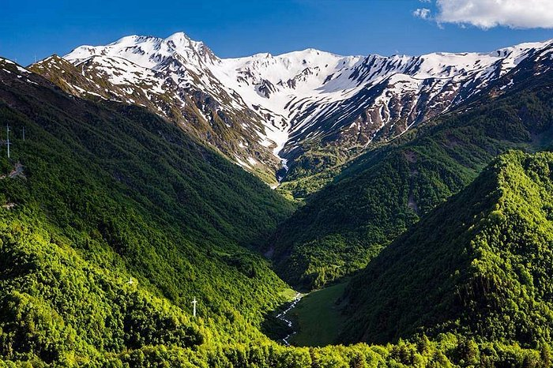

Racha-Lechkhumi and Kvemo Svaneti (Georgian: რაჭა-ლეჩხუმი და ქვემო სვანეთი, Rach’a-Lechkhumi da Kvemo Svaneti) is a region (Mkhare) in northwestern Georgia with a population of 28,500 (2021), making it the most sparsely populated region in the country. It has a nominal area of 4,954 km2 (1,913 sq mi), of which 4,600 km2 (1,800 sq mi) is de facto controlled by Georgia. The remainder is effectively under South Ossetian control.[nt 2] The region has Ambrolauri as its administrative center and Parmen Margvelidze is governor of the region since June 2021. Racha-Lechkhumi and Kvemo Svaneti includes the historical provinces of Racha, Lechkhumi and Kvemo Svaneti (i.e., Lower Svaneti).
The largest river entirely in Georgia, the Rioni, has its major origins in Racha-Lechkhumi and Kvemo Svaneti, more specifically in Mountain Racha in the Greater Caucasus main ridge northwest of the village of Ghebi at the 3779 meter high Mt Pasismta. The Tskhenistsqali, the sixth river of Georgia, which flows into the Rioni after 176 kilometers at Samtredia, also finds its origin in this region, like the Rioni at Mt Pasismta. Both rivers flow in opposite directions through the region and find their exit in the southwest corner through the Khvamli chalk massif.
The region has four municipalities with 62 administrative communities (temi) and a total of 256 populated settlements: